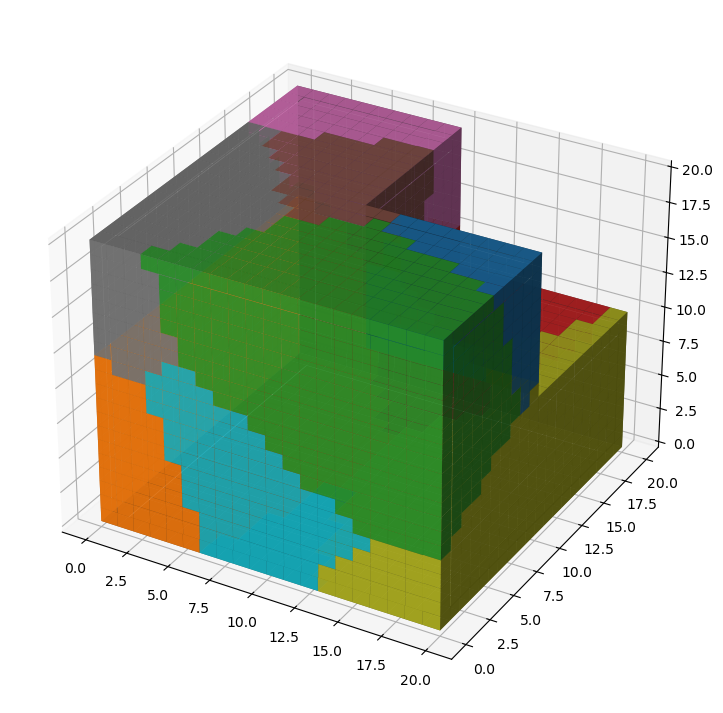

import numpy as np
import matplotlib.pyplot as plt
from matplotlib import cm
def compute_voronoi_labels(points, seeds):
diff = points[:, None, :] - seeds[None, :, :]
dist2 = np.sum(diff**2, axis=2)
return np.argmin(dist2, axis=1)
def draw_cube_edges(ax, size):
s = size
corners = np.array([
[0, 0, 0],
[s, 0, 0],
[s, s, 0],
[0, s, 0],
[0, 0, s],
[s, 0, s],
[s, s, s],
[0, s, s],
])
edges = [
(0, 1), (1, 2), (2, 3), (3, 0),
(4, 5), (5, 6), (6, 7), (7, 4),
(0, 4), (1, 5), (2, 6), (3, 7)
]
for i, j in edges:
ax.plot(
[corners[i, 0], corners[j, 0]],
[corners[i, 1], corners[j, 1]],
[corners[i, 2], corners[j, 2]],
color="black",
linewidth=1.0
)
def main():
rng = np.random.default_rng(4)
# -----------------------------
# Parameters
# -----------------------------
n_seeds = 9
grid_res = 64 # 18-28 works well in matplotlib
use_cutaway = True # remove one corner so interior is visible
alpha = 0.9
# Seed points inside [0,1]^3
seeds = rng.uniform(0.08, 0.92, size=(n_seeds, 3))
# Voxel centers
xs = np.linspace(0.0, 1.0, grid_res, endpoint=False) + 0.5 / grid_res
ys = np.linspace(0.0, 1.0, grid_res, endpoint=False) + 0.5 / grid_res
zs = np.linspace(0.0, 1.0, grid_res, endpoint=False) + 0.5 / grid_res
X, Y, Z = np.meshgrid(xs, ys, zs, indexing="ij")
points = np.column_stack([X.ravel(), Y.ravel(), Z.ravel()])
labels = compute_voronoi_labels(points, seeds).reshape((grid_res, grid_res, grid_res))
# All voxels active
filled = np.ones((grid_res, grid_res, grid_res), dtype=bool)
# Optional cutaway: remove one octant to reveal the inside
if use_cutaway:
cx = grid_res // 2
cy = grid_res // 2
cz = grid_res // 2
filled[cx:, cy:, cz:] = False
# Colors per region
cmap = cm.get_cmap("tab10", n_seeds)
facecolors = np.zeros(filled.shape + (4,), dtype=float)
for region_id in range(n_seeds):
color = list(cmap(region_id))
color[3] = alpha
facecolors[labels == region_id] = color
# Remove colors where voxels are not shown
facecolors[~filled] = (0, 0, 0, 0)
# -----------------------------
# Plot
# -----------------------------
fig = plt.figure(figsize=(9, 9))
ax = fig.add_subplot(111, projection="3d")
ax.voxels(
filled,
facecolors=facecolors,
edgecolor=(0, 0, 0, 0.08),
linewidth=0.15,
shade=False
)
# Plot seed points in voxel coordinates
seed_plot = seeds * grid_res
ax.scatter(
seed_plot[:, 0],
seed_plot[:, 1],
seed_plot[:, 2],
c=np.arange(n_seeds),
cmap=cmap,
s=90,
edgecolors="black",
linewidths=1.0,
depthshade=False
)
draw_cube_edges(ax, grid_res)
ax.set_title("3D Voronoi Inside a Cube (Voxel Representation)")
ax.set_xlabel("X")
ax.set_ylabel("Y")
ax.set_zlabel("Z")
ax.set_box_aspect((1, 1, 1))
ax.set_xlim(0, grid_res)
ax.set_ylim(0, grid_res)
ax.set_zlim(0, grid_res)
ax.set_xticks([])
ax.set_yticks([])
ax.set_zticks([])
ax.set_axis_off()
ax.view_init(elev=26, azim=38)
plt.tight_layout()
plt.savefig("voronoi_cube.png", dpi=300, bbox_inches="tight", transparent=True)
plt.show()
if __name__ == "__main__":
main()C:\Users\alfon\AppData\Local\Temp\ipykernel_35016\2348273906.py:76: MatplotlibDeprecationWarning: The get_cmap function was deprecated in Matplotlib 3.7 and will be removed in 3.11. Use ``matplotlib.colormaps[name]`` or ``matplotlib.colormaps.get_cmap()`` or ``pyplot.get_cmap()`` instead.
cmap = cm.get_cmap("tab10", n_seeds)--------------------------------------------------------------------------- AttributeError Traceback (most recent call last) Cell In[1], line 139 135 plt.show() 138 if __name__ == "__main__": --> 139 main() Cell In[1], line 102, in main() 100 # Plot seed points in voxel coordinates 101 seed_plot = seeds * grid_res --> 102 ax.scatter( 103 seed_plot[:, 0], 104 seed_plot[:, 1], 105 seed_plot[:, 2], 106 c=np.arange(n_seeds), 107 cmap=cmap, 108 s=90, 109 edgecolors="black", 110 linewidths=1.0, 111 depthshade=False, 112 shade=False 113 ) 115 draw_cube_edges(ax, grid_res) 117 ax.set_title("3D Voronoi Inside a Cube (Voxel Representation)") File c:\Users\alfon\anaconda3\envs\VirtualizedPC\Lib\site-packages\matplotlib\__init__.py:1473, in _preprocess_data.<locals>.inner(ax, data, *args, **kwargs) 1470 @functools.wraps(func) 1471 def inner(ax, *args, data=None, **kwargs): 1472 if data is None: -> 1473 return func( 1474 ax, 1475 *map(sanitize_sequence, args), 1476 **{k: sanitize_sequence(v) for k, v in kwargs.items()}) 1478 bound = new_sig.bind(ax, *args, **kwargs) 1479 auto_label = (bound.arguments.get(label_namer) 1480 or bound.kwargs.get(label_namer)) File c:\Users\alfon\anaconda3\envs\VirtualizedPC\Lib\site-packages\mpl_toolkits\mplot3d\axes3d.py:2706, in Axes3D.scatter(self, xs, ys, zs, zdir, s, c, depthshade, *args, **kwargs) 2703 if np.may_share_memory(zs_orig, zs): # Avoid unnecessary copies. 2704 zs = zs.copy() -> 2706 patches = super().scatter(xs, ys, s=s, c=c, *args, **kwargs) 2707 art3d.patch_collection_2d_to_3d(patches, zs=zs, zdir=zdir, 2708 depthshade=depthshade) 2710 if self._zmargin < 0.05 and xs.size > 0: File c:\Users\alfon\anaconda3\envs\VirtualizedPC\Lib\site-packages\matplotlib\__init__.py:1473, in _preprocess_data.<locals>.inner(ax, data, *args, **kwargs) 1470 @functools.wraps(func) 1471 def inner(ax, *args, data=None, **kwargs): 1472 if data is None: -> 1473 return func( 1474 ax, 1475 *map(sanitize_sequence, args), 1476 **{k: sanitize_sequence(v) for k, v in kwargs.items()}) 1478 bound = new_sig.bind(ax, *args, **kwargs) 1479 auto_label = (bound.arguments.get(label_namer) 1480 or bound.kwargs.get(label_namer)) File c:\Users\alfon\anaconda3\envs\VirtualizedPC\Lib\site-packages\matplotlib\axes\_axes.py:4901, in Axes.scatter(self, x, y, s, c, marker, cmap, norm, vmin, vmax, alpha, linewidths, edgecolors, plotnonfinite, **kwargs) 4897 keys_str = ", ".join(f"'{k}'" for k in extra_keys) 4898 _api.warn_external( 4899 "No data for colormapping provided via 'c'. " 4900 f"Parameters {keys_str} will be ignored") -> 4901 collection._internal_update(kwargs) 4903 # Classic mode only: 4904 # ensure there are margins to allow for the 4905 # finite size of the symbols. In v2.x, margins 4906 # are present by default, so we disable this 4907 # scatter-specific override. 4908 if mpl.rcParams['_internal.classic_mode']: File c:\Users\alfon\anaconda3\envs\VirtualizedPC\Lib\site-packages\matplotlib\artist.py:1216, in Artist._internal_update(self, kwargs) 1209 def _internal_update(self, kwargs): 1210 """ 1211 Update artist properties without prenormalizing them, but generating 1212 errors as if calling `set`. 1213 1214 The lack of prenormalization is to maintain backcompatibility. 1215 """ -> 1216 return self._update_props( 1217 kwargs, "{cls.__name__}.set() got an unexpected keyword argument " 1218 "{prop_name!r}") File c:\Users\alfon\anaconda3\envs\VirtualizedPC\Lib\site-packages\matplotlib\artist.py:1190, in Artist._update_props(self, props, errfmt) 1188 func = getattr(self, f"set_{k}", None) 1189 if not callable(func): -> 1190 raise AttributeError( 1191 errfmt.format(cls=type(self), prop_name=k)) 1192 ret.append(func(v)) 1193 if ret: AttributeError: PathCollection.set() got an unexpected keyword argument 'shade'
